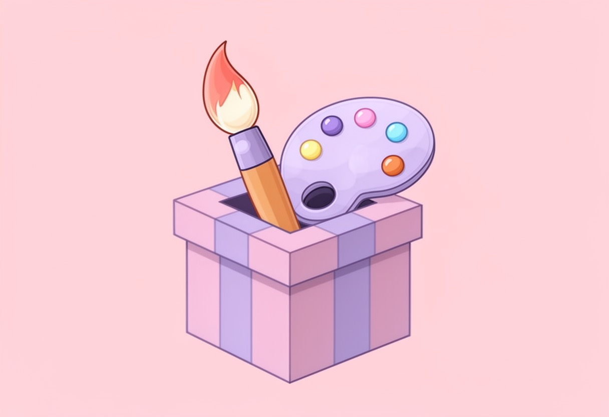

AI绘画入门:提示词怎么写
AI绘画入门:提示词怎么写 很多刚接触AI绘画的朋友，第一反应往往是：“只要我描述得足够详细，就能画出我想要的图。”于是，大家习惯性地堆砌形容词，写下一大段冗长的文字，结果生成的图片要么构图混乱，要么风格完全不对。其实，…
提示词 2026-09-17 · 约7分钟
2026-09-15 · AI绘画实验室 · 约6分钟读完 · 工具实测

作为一个每天和像素打交道的平面设计师，最近半年我最大的感受就是：AI绘图工具迭代的速度，快得让人有点焦虑。上周还在用Midjourney V5.2调参，这周Stable Diffusion的新模型又发布了。对于像我们这样既想尝鲜新技术，又不想每个月支付几十美元订阅费的设计师来说，“免费”且“好用”的AI绘图工具简直是救命稻草。
过去两周，我专门抽时间，把市面上主流的几款免费（或拥有大量免费额度）的AI绘图工具都跑了一遍。不是那种只看官网宣传图的云体验，而是真正为了出图、为了做设计稿去实测。今天就把这份包含“踩坑记录”和“实操技巧”的体验报告分享给你们，希望能帮大家省下不少摸索的时间。
首先必须提的是Stable Diffusion（简称SD）。虽然很多人觉得本地部署显卡要求高，但对于有一定基础的用户来说，它依然是自由度最高的选择。不过，考虑到大多数自媒体配图需求者并没有RTX 4090这样的显卡，我主要测试了它的WebUI在线版以及基于SD架构的在线托管平台。
实测体验：
SD的核心优势在于“可控”。如果你需要生成一张特定构图、特定姿势的产品海报，SD配合ControlNet插件是目前的王者。
操作步骤：
cat with coffee cup 往往效果一般。加上权重语法 (cat:1.2) holding (coffee cup:1.1) 后，主体突出度明显提升。lowres, bad anatomy, bad hands, text, error, missing fingers, extra digit, fewer digits, cropped, worst quality, low quality, normal quality, jpeg artifacts, signature, watermark, username, blurry, artist name。这能解决80%的“手指多长”和“画质模糊”问题。缺点：在线版通常有排队时间，高峰期可能需要等待5-10分钟才能出图。而且对于完全的小白，参数太多容易劝退。
Midjourney（MJ）的审美在线，生成的图片自带一种“高级感”，光影和色彩非常和谐。但遗憾的是，MJ目前没有完全免费的长期方案，早期的免费试用额度也早已取消。
不过，我测试了一些基于MJ模型或与其风格类似的免费Web端工具。这类工具通常界面极简，只需输入提示词即可。
实测体验：
这类工具在生成人物肖像和风景画时表现不错，尤其是氛围感的营造。我尝试输入 cyberpunk city street, neon lights, rain, cinematic lighting, 8k，生成的图片直接就能用作自媒体文章的头图，几乎不需要后期修图。
缺点：可控性极差。你很难指定物体在画面的具体位置，或者让角色做特定的动作。如果是做商业设计，这种“盲盒”式的出图方式风险太大。
除了专门的绘图工具，我发现很多综合型AI助手也开始集成绘画功能。这类工具的优势在于“一站式”，你可以在同一个界面里先让AI写文案，再根据文案生成配图，最后甚至能生成视频。
在我测试的众多综合平台中，有一个叫 小白AI助手 的网站给我留下了比较深的印象。它主打的是无需注册即可体验，这对于不想为了试错而注册一堆账号的用户来说非常友好。
具体操作流程分享：
我打开 小白AI助手网站 后，直接进入了AI绘画板块。它的界面比SD简洁多了，没有复杂的参数滑块，主要是“自然语言描述+风格选择”。
免费体验小白AI助手 →这种“对话式绘画”的逻辑，对于非专业设计师来说，学习成本几乎为零。
经过这一轮实测，我的建议如下：
AI绘画工具还在快速进化，今天的神器明天可能就被迭代。但有一点是确定的：工具只是辅助，你的审美和创意才是核心。AI可以帮你在一分钟内生成100种构图，但决定哪一张能打动用户的，依然是你。
希望这份报告能帮你少走一些弯路。如果你也是被AI绘画困扰的“打工人”，不妨试试我上面提到的那些免费或低门槛工具，说不定下一个爆款封面图，就诞生在你的提示词里。
AI绘画入门:提示词怎么写 很多刚接触AI绘画的朋友，第一反应往往是：“只要我描述得足够详细，就能画出我想要的图。”于是，大家习惯性地堆砌形容词，写下一大段冗长的文字，结果生成的图片要么构图混乱，要么风格完全不对。其实，…
提示词 2026-09-17 · 约7分钟
AI生成商品图的实战技巧 做电商或者自媒体运营的朋友都知道，一张高质感的商品图，往往决定了点击率的上限。过去，为了拍出一张有氛围感的产品照，我们需要租赁影棚、购买昂贵的灯光设备，甚至还要找专业的摄影师和修图师，一套流程走…
风格教程 2026-09-17 · 约5分钟